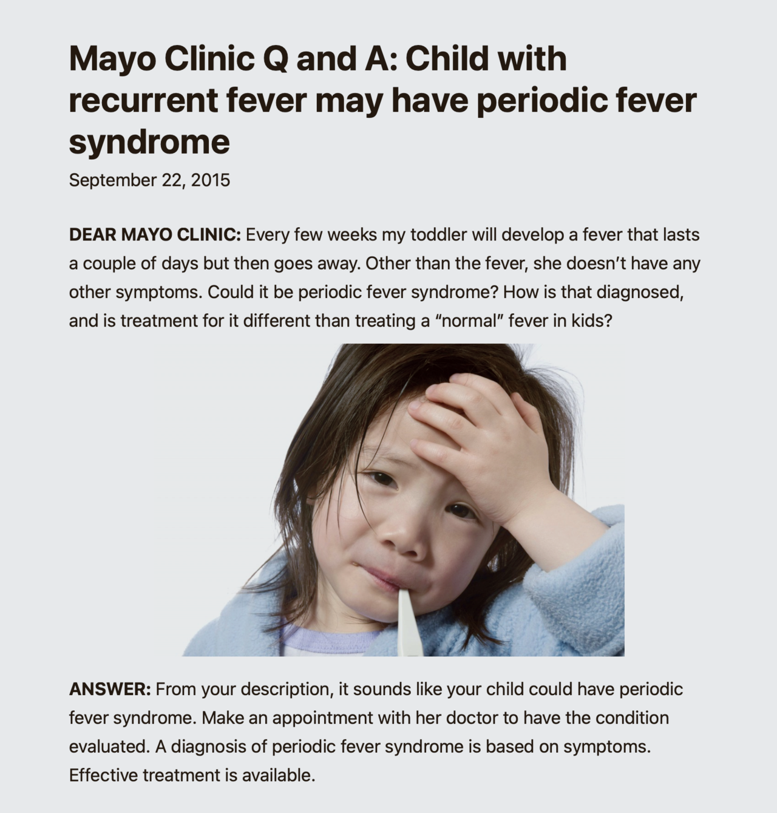
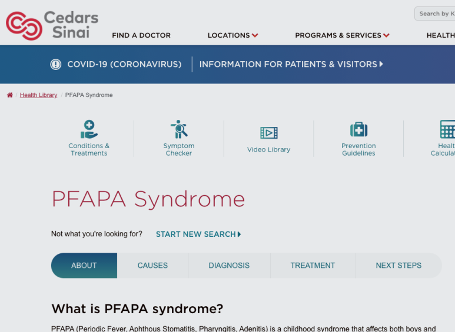
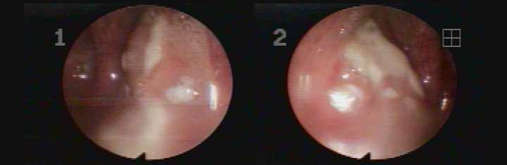

이 페이지에서 살펴볼 내용
파파증후군에 대해
갑자기 40도전후의 고열이 나고 3-7일간 지속됩니다. 한달에 한번씩 아이가 병원신세를 지게되는 경우도 흔합니다.
파파증후군,
발열, 구강궤양, 인후염, 림프절부종이 주기적으로, 반복적으로 발병하는 증후군입니다.
비정상적인 면역체계반응으로 인해 발생하며 보통 소아에게 흔합니다.
갑자기 40도전후의 고열이 나고 3-7일간 지속됩니다. 한달에 한번씩 아이가 병원신세를 지게되는 경우도 흔합니다.
열이 났다가 사라지기를 반복하고 성인이 되기 전 사라집니다.
파파증후군, 정식명칭은
Periodic Fever, Pharyngitis, and Aphthous stomatitis (PFAPA) Syndrome입니다.
앞글자를 따서 파파증후군이라고 합니다.
면역체계가 이유없이 망가진 질환입니다.
치료방법이 명확하게 없으며 소아과에서는 스테로이드 치료, 편도절제술을 통해 개선하고자합니다.
소아 호흡기 질환에 대해 의료선진국에서는
파파증후군과 같은 잦은 상기도감염질환에 대해 한의학적으로 어떻게 바라보고 치료에 응용하고 있을까요?
해외의 의사가 보기에 상대적으로 서양의학에 비해 한의학적 치료가 가지는 장점은 무엇일까요?


국내에는 몇몇 블로그, 논문자료가 있기는 한데
아직까지 본격적으로 다뤄지는 분야가 아닌지라
조금 더 잘 정리가 된 해외 사이트의 글들을 중심으로 편집해보았습니다.
(세다르 시나이병원, 메이요클리닉, 일본소아과 학술대회, 일본소아과학회학술집회(2014), GOTO COLLEGE OF MEDICAL ARTS AND SCIENCES 등)
I 파파증후군 PFAPA Syndrome 이란?
해온한의원은
감기와 비염, 기침, 가래 질환과 같은 소아의 호흡기 감염질환을 굉장히 자주 진료합니다.
상기도감염(감기에 자주 걸리거나, 몇번씩 중이염, 편도염을 앓는 아이)이 반복되고,
반복해서 소아과를 찾는 아이들이 있습니다.
이런 아이들은 처음에는 항생제를 사용하지 않지만
이내 잦은 감염을 치료하기 위해 항생제, 스테로이드 등 양약처방을 복합적으로 다양하게 받아 치료를 받게됩니다.
하지만
다시 반복적으로 발열, 상기도감염질환에 걸리고 부모님은 상당히 난감해집니다.
이런 아이들은 면역체계가 비정상적으로 약하다는 공통점이 존재합니다.
파파증후군 (PFAPA 증후군)은 이런 잦은 감염을 의미하는 증후군 중 하나입니다.
주기적인 발열(38.9도이상)이 있으며
구강궤양, 인후염, 임파선염이 반복적으로 발생합니다.
일반적으로 2세에서 5세 사이의 유아기에 시작됩니다. 매우 드물게 성인기에 시작되기도 합니다.
I 파파증후군, 원인과 증상에 대해
원인은 아직까지 명확하지 않습니다.
파파증후군은 전염성이 없으며, 유전적인 인자가 관여하지도 않습니다.
일부 연구자들은 여타 감염이 원인일 수 있다고 보지만 확실하지는 않습니다.
해외에서 발간된 논문을 보면 독감에 대한 한약의 치료 효과에 대해 긍정적으로 평가하고 있습니다.
파파증후군이 있는 아이들은 38.9°C 이상의 고열이 반복적으로 나타납니다.
주요한 원인
- 구강궤양(아프타성 구내염)
- 발적을 동반한 인후염(인두편도염)
- 목의 림프절 비대 (임파선염)
- 편도의 백색점
흔하지 않은 증상
- 두통
- 관절통
- 발진
- 복통
- 오심, 구토(울렁거림)
- 설사
파파증후군의 증상은 수일에서 일주일간 지속됩니다.
4-5주마다 반복될 수 있습니다. 그 사이 아이들은 갑자기 다 나은 것처럼 보입니다.

우선 의료진은 아이의 증상, 병력에 대해 질문하며 몇가지 검사를 시행하게 됩니다.
파파증후군은 '증후군'이라는 명칭처럼 양방적으로 확진이 가능한 검사는 없습니다.
다만 다른 질병을 배제하기 위해
다음과 같은 검사가 시행되기도 합니다.
I 파파증후군, 진단과 치료
우선 의료진은 아이의 증상, 병력에 대해 질문하며 몇가지 검사를 시행하게 됩니다.
파파증후군은 '증후군'이라는 명칭처럼 양방적으로 확진이 가능한 검사는 없습니다.
다만 다른 질병을 배제하기 위해
다음과 같은 검사가 시행되기도 합니다.
- WBC, 기초혈액검사(CBC) - 감염의 징후를 찾습니다.
- 적혈구침강속도(ESR) 및 C-반응단백(CRP) - 일반적인 염증반응을 확인합니다.
- Strep culture - 패혈성 인두염을 확인합니다.
- MRI - 복부 CT가 포함되기도합니다.
- 유전자검사 - 반복되는 발열을 유발하는 다른 증후군을 확인하기 위해 수행되기도 합니다.
다시 말하지만
파파증후군은 여타 다른 질환에 비해 검사방법이 일률적으로 통일되어 있지 않은 질환입니다.
간단한 바이러스검사만 시행하는 경우도 있고
증상과 병력만으로 유추하는 경우도 있습니다.
때때로 3회이상 주기적인 발열이 발생했고
스테로이드제를 사용했을 때 호전이 된 경우에 파파증후군 진단을 내리기도 합니다.
양방적인 최상의 치료방법은 존재하지 않습니다만
가능한 치료법은 다음과 같습니다.
- 단기간의 스테로이드제 사용 - 이는 종종 증상을 단축시킵니다.
- 편도선을 제거하는 수술 - 일부 어린이들의 향후 재발률을 낮춥니다.
발열을 개선시키기 위해 해열제를 복용하는 것도 가능하지만
종종 아세트아미노펜(타이레놀)이나 이부프로펜과 같은 표준 해열제에 반응하지 않습니다.
스테로이드제는 치료기간을 단축시키기도하지만
재발 주기를 더 잦게 만들기도 하고 수면장애와 같은 부작용을 일으킵니다.
이 안내는 건강에 대한 이해를 돕는 참고 정보입니다. 증상과 질환에 대한 정확한 판단은 의료진의 진료가 필요합니다.